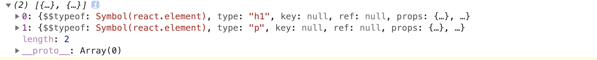

ReactNative Flex
RN中有4个容器属性，2个项目属性，容器属性即控制容器内的子元素设置在父元素上的，而项目属性即和自身有关
容器属性
flexDirection 决定主轴的方向
属性有 row row-reverse column(默认) column-reverse
flexWrap 当一条轴线排不下时 决定是否换行
属性有 nowrap(默认) 不换行 wrap 换行，第一行在上方 wrap-reverse换行，第一行在下方
justifyContent 定义伸缩项目在主轴的对齐方式
属性有flex-start(默认值) 伸缩项目向一行的起始位置靠齐 flex-end向一行的结束位置靠齐 center向一行的中间位置靠齐 space-between:两端对齐，项目之间的间隔相等 space-around:伸缩项目平均的分布在行中，两端保留一半的空间
alignItems 项目在交叉轴上如何对齐
属性有 flex-start：交叉轴的起点对齐 flex-end：交叉轴的终点对齐 cener：交叉轴的中点对齐 baseline：项目第一行文字的基线对齐 stretch（默认值）：若项目未设置高度或者auto将会占满整个容器高度
项目属性
flex 在RN中只能为整数 当取正整数时，将根据其他组建的flex值的比进行布局，当flex为0时，元素将不能缩放，宽高由具体值决定 当flex为-1时，元素将不能缩放，宽高由具体值决定，当剩余空间不够时，使用最小宽度和高度
alignSelf 决定了元素在父元素的磁州排列方式 允许单个项目和其他项目不一样的对齐方式，覆盖alignItems对齐方式，默认是auto属性
borderWidth 决定元素的边框宽度
borderBottomWidth borderLeftWidth borderRightWidth borderTopWidth 决定元素和父元素的边界距离
bottom决定元素距离父元素的底部多少距离
left本组件到左边多少像素
right元素距离右边多少距离
top 元素距离顶部多少距离（顶部的定义取决于position）
height
width
margin 与设置了marginTop、marginBottom、marginLeft、marginRight效果相同
marginHorizontal相当于设置了marginLeft和marginRight 、 marginVertical相当于设置了marginTop和marginBottom
maxHeight设置该组件的最大高度限制
minHeight设置该组件最小高度
maxWidth 设置该组件最大宽度限制
minWidth 设置该组件最小宽度限制
overflow当内容超出范围时 hidden超出范围内容不显示 visible超出范围的也显示 scroll超出范围的可以滚动显示
padding相当于paddingToppaddingBottompaddingLeftpaddingRight设置元素和内容的内边距
paddingVertical paddingHorizontal
position 默认为relative 当设置为position时 即为相对于父元素布局
zIndex 控制元素重叠时 那个元素在上层显示，通常不设置的话 后添加的元素会默认覆盖之前的元素
函数子组件
组件必须有子组件 而且子组件必须为函数，可以在这个组件的生命周期中通过this.props.children访问到该子组件函数，在组件中通过执行该子组件函数来渲染子组件内容，我们只需要负责使用该组件并且完成子组件函数，在函数中return我们需要的内容
class CountDown extends React.Component {
constructor() {
super(...arguments);
this.state = {count: this.props.startCount};
}
shouldComponentUpdate(nextProps, nextState) {
return nextState.count !== this.state.count;
}
componentDidMount() {
this.intervalHandle = setInterval(() => {
const newCount = this.state.count - 1;
if (newCount >= 0) {
this.setState({count: newCount});
} else {
window.clearInterval(this.intervalHandle);
this.intervalHandle = null;
}
}, 1000);
}
componentWillUnmount() {
if (this.intervalHandle) {
window.clearInterval(this.intervalHandle);
this.intervalHandle = null;
}
}
render() {
//传入需要的参数 并执行子组件函数
return this.props.children(this.state.count);
}
}
使用该组件
<CountDown startCount={10}>
{
(count) => <div>{count > 0 ? count : "新年快乐"} </div>
}
</CountDown>
Refs
在React中我们的数据流是从上至下，通过传递给子组件props来重新渲染它
但是，有时候我们需要获取某些组件或者DOM元素，强制修改,这时我们可以使用Refs
我们应该使用声明式实现，避免使用refs，尽量只在一下几种情况下使用:
- 处理焦点、文本选择或媒体控制
- 触发强制动画
- 集成第三方 DOM 库
添加Ref
import React from "react"
class CustomTextInput extends React.Component {
constructor(props) {
super(props)
this.focus = this.focus.bind(this)
}
focus() {
this.textInput.focus()
}
render() {
return(
<div>
//通过ref设置textInput 为此DOM元素
<input type="text" ref={input => this.textInput = input} ></input>
<input type="button" value="获得焦点" onClick={this.focus} ></input>
</div>
)
}
}
export default CustomTextInput
ref={input => this.textInput = input} ref属性 会在DOM元素加载时将此元素传入ref,卸载时传入null
这种声明方式只对DOM元素和用class声明的组件有效
在函数式组件上，因为没有实例，所以不能使用ref属性
对父组件暴露DOM节点
当我们想要向从父组件访问子组件节点时,我们可以将传递给子组件一个特殊的函数属性,然后将这个函数属性作为ref属性传入子节点，可以通过这个函数将子节点赋值给父节点的属性
class CustomTextInput extends React.Component {
render() {
return(
<div>
<input type="text" ref={this.props.inputRef} ></input>
</div>
)
}
}
class ParentCompnent extends React.Component {
constructor(props) {
super(props)
this.focus = this.focus.bind(this)
}
focus() {
this.textInput.focus()
}
render() {
return(
<div>
<input type="button" value="获得焦点" onClick={this.focus} ></input>
<CustomTextInput inputRef={refCom => this.textInput = refCom}></CustomTextInput>
</div>
)
}
}
export default ParentCompnent
<CustomTextInput inputRef={refCom => this.textInput = refCom}></CustomTextInput>设置子组件的ref属性回调此函数，将子组件设置为父组件的this.textInput属性
如果有更深的层级结构 我们只需要一级一级传递即可
ProTypes验证器
虽然js扩展中有对类型检查,但是我们可以利用JS内置的类型检查功能
我们可以通过配置类型的proTypes属性，来对类型做检查或者限制
PropTypes包含一整套的验证器，当传递了无效值时会打印警告(由于性能原因只会在开发模式下进行检查)
限制props类型
import PropTypes from "prop-types"
class Greeting extends React.Component {
render() {
console.log(Greeting.propTypes)
return(
<h1>Hello, {this.props.name}</h1>
)
}
}
//对Greeting的propTypes进行限制检查,name属性只能传的值限制为string类型
Greeting.propTypes = {
name: PropTypes.string
}
export default Greeting
除了string类型 还有 number、array、bool、func等,具体可查看React中文网
限制单个子代
设置属性的默认值
class Greeting extends React.Component {
render() {
console.log(Greeting.propTypes)
return(
<h1>Hello, {this.props.name}</h1>
)
}
}
Greeting.propTypes = {
name: PropTypes.string
}
//设置默认值
Greeting.defaultProps = {
name: "stranger"
}
组合和继承
在React中 我们使用组合而不是继承来复用组件
组合
props.children 传递所有子组件
当我们不清楚这个组件的子组件都是什么时，我们可以直接将其传递到输出
function FancyBorder(props) {
return(
<div>
//props.children 可以获取其所有的子组件数组 元素是React.element
{props.children}
{console.log(props.children)}
</div>
)
}
class PublicFancyBorder extends React.Component {
render() {
return(
<FancyBorder color="blue">
<h1 className="Dialog-title">
Welcome
</h1>
<p className="Dialog-message">
Thank you for visiting our spacecraft!
</p>
</FancyBorder>
)
}
}
export default PublicFancyBorder

JSX 标签内的任何内容都将通过 children 属性传入 FancyBorder
自定义属性传递组件
当然 我们也可以自己定义属性 将不同部分的组件传入
function FancyBorder(props) {
return(
<div>
{props.left}
{props.right}
</div>
)
}
class PublicFancyBorder extends React.Component {
render() {
return(
<FancyBorder left={<h1>左标题</h1>} right={<h2>右标题</h2>}>
</FancyBorder>
)
}
}
export default PublicFancyBorder
设置基组件 以及 实现的特殊组件
这是了通用的组件,在具体实现组件中完成其实现
function FancyBorder(props) {
return(
<div>
<h1>
{props.title}
</h1>
</div>
)
}
class PublicFancyBorder extends React.Component {
render() {
return(
<FancyBorder title="这是标题">
</FancyBorder>
)
}
}
export default PublicFancyBorder
状态提升
在React中,几个组件想要状态分享的话,我们需要把状态放到其父组件进行管理,然后通过子组件的属性传递
如果某些值可以由props或者state提供,那其就不应该出现在state中,而是在需要时 由state或者props计算出来
事件处理函数
js中事件处理函数写法:
class BtnComponets extends React.Component {
constructor(props) {
super(props)
//js中的方法当作为事件函数需要绑定this
this.actionClick = this.actionClick.bind(this)
}
actionClick(e) {
console.log('The link was clicked.');
console.log(this)
}
render() {
return(
<a href="#" onClick={this.actionClick}> Click Me </a>
// <button onClick = {this.actionClick}> 这是一个按钮 </button>
)
}
}
注意:
类的方法 默认不会绑定
this当把其传到事件函数中，当调用此函数时 其值默认为undefined，因此需要在构造方法中对其绑定。(在传入事件回调函数时进行绑定的话,会在每次使用此组件时就进行一次绑定 浪费性能)作为事件处理函数传入时,传入的是函数名而不是执行函数，例如传入的是
onClick={this.actionClick}而不是onClick={this.actionClick}，你也可以这么写onClick={()=>{this.actionClick()}}，但是样每次都会创建一个函数,不推荐这么写
阻止默认行为
在React中另一个不同是你不能使用返回false的方式阻止默认行为。你必须明确的使用 preventDefault
function ActionLink() {
function handleClick(e) {
e.preventDefault();
console.log('The link was clicked.');
}
return (
<a href="#" onClick={handleClick}>
Click me
</a>
);
}